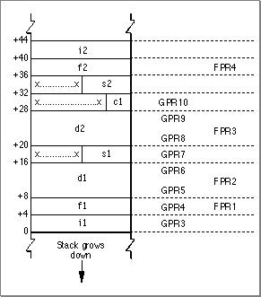
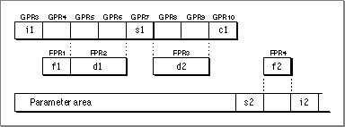
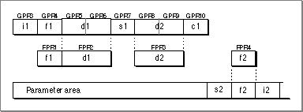

Legacy Document
Important: The information in this document is obsolete and should not be used for new development.
Important: The information in this document is obsolete and should not be used for new development.


Routine Calling Conventions
This section details the process of passing parameters to a routine in the PowerPC runtime environment.
A routine can have a fixed or variable number of arguments. In an ANSI-style C syntax definition, a routine with a variable number of arguments typically appears with ellipsis points (...) at the end of its input parameter list.
- Note
- These parameter passing conventions are part of Apple's standard for procedural interfaces. Object-oriented languages may use different rules for their own method calls. For example, the conventions for C++ virtual function calls may be different from those for C functions.

A variable-argument routine may have several required (that is, fixed) parameters preceding the variable parameter portion. For example, the routine definition
mooColor(number,[color1. . .])gives no restriction on the number of color arguments, but you must always precede them with a number argument. Therefore, number is a fixed parameter.Typically the calling routine passes parameters in registers. However, the compiler generates a parameter area in the caller's stack frame that is large enough to hold all parameters passed to the called routine, regardless of how many of the parameters are actually passed in registers. There are several reasons for this scheme:
You can think of the parameter area as a data structure that has space to hold all the parameters in a given call. The parameters are placed in the structure from left to right according to the following rules:
- It provides the callee with space to store a register-based parameter if it wants to use one of the parameter registers for some other purpose (for instance, to pass parameters to a subroutine).
- Routines with variable-length parameter lists must often access their parameters from RAM, not from registers. Such routines must reserve eight registers (32 bytes) in the parameter area to hold the parameter values.
- To simplify debugging, some compilers may write parameters from the parameter registers into the parameter area in the stack frame; this allows you to see all the parameters by looking only at that parameter area.
For a routine with fixed parameters, the first 8 words (32 bytes) of the data structure, no matter the size of the individual parameters, are passed in registers according to the following rules:
- All parameters are aligned on 4-byte (word) boundaries.
- Noncomposite parameters smaller than 4 bytes occupy the low order bytes of their word.
- Composite parameters (such as data structures) are followed by padding to make a multiple of 4 bytes, with the padding bytes being undefined.
- The first 8 words are placed in GPR3 through GPR10 unless a floating-point parameter is encountered.
- Floating-point parameters are placed in the floating-point registers FPR1 through FPR13.
- If a floating-point parameter appears before all the general-purpose registers are filled, the corresponding GPRs that match the size of the floating-point parameter are skipped. For example, a
floatitem causes one (4-byte) GPR to be skipped, while an item of typedoublecauses two GPRs to be skipped.- If the number of parameters exceeds the number of usable registers, the calling routine writes the excess parameters into the parameter area of its stack frame.
For example, consider a routine
- Note
- Currently the parameter area must be at least 8 words (32 bytes) in size.
mooFuncwith this declaration:
void mooFunc (SInt32 i1, float f1, double d1, SInt16 s1, double d2, UInt8 c1, UInt16 s2, float f2, SInt32 i2);To see how the parameters ofmooFuncare arranged in the parameter area on the stack, first convert the parameter list into a structure, as follows:
struct params { SInt32 p_i1; float p_f1; double p_d1; SInt16 p_s1; double p_d2; UInt8 p_c1; UInt16 p_s2; float p_f2; SInt32 p_i2; };This structure serves as a template for constructing the parameter area on the stack. (Remember that, in actual practice, many of these variables are passed in registers; nonetheless, the compiler still allocates space for all of them on the stack, for the reasons just mentioned.)The "top" position on the stack is for the field
pi_1(the structure field corresponding to parameteri1). The floating-point fieldp_f1is assigned to the next word in the parameter area. The 64-bit double fieldp_d1is assigned to the next two words in the parameter area. Next, the short integer fieldp_s1is placed into the following 32-bit word; the original value ofp_s1is in the lower half of the word, and the padding is in the upper half. The remaining fields of theparamsstructure are assigned space on the stack in exactly the same way, with unsigned values being extended to fill each field to make it a 32-bit word. The final arrangement of the stack is illustrated in Figure 4-4. (Because the stack grows down, it looks as though the fields of theparamsstructure are upside down.)Figure 4-4 The organization of the parameter area of the stack

To see which parameters are passed in registers and which are passed on the stack, you need to map the stack, as illustrated in Figure 4-4, to the available general-purpose and floating-point registers. Therefore, the parameter
i1is passed in GPR3, the first available general-purpose register. The floating-point parameterf1is passed in FPR1, the first available floating-point register. This action causes GPR4 to be skipped.The parameter
d1is placed into FPR2 and the corresponding general-purpose registers GPR5 and GPR6 are unused. The parameters1is placed into the next available general-purpose register, GPR7. Parameterd2is placed into FPR3, with GPR8 and GPR9 masked out. Parameterc1is placed into GPR10, which fills out the first 8 words of the data structure. Parameters2is then passed in the parameter area of the stack. Parameterf2is passed in FPR4, since there are still floating-point registers available. Finally, parameteri2is passed on the stack. Figure 4-5 shows the final layout of the parameters in the registers and the parameter area.Figure 4-5 Parameter layout in registers and the parameter area

If you have a C routine with a variable number of parameters (that is, one that does not have a fixed prototype), the compiler cannot know whether to pass a parameter in the variable portion of the routine in the general-purpose (that is, fixed-point) registers or in the floating-point registers. Therefore, the compiler passes the parameter in both the floating-point and the general-purpose registers, as shown in Figure 4-6.
Figure 4-6 Passing a variable number of parameters

The called routine can access parameters in the fixed portion of the routine definition as usual. However, in the variable-argument portion of the routine, the called routine must copy the GPRs to the parameter area and access the values from there. Listing 4-3 shows a routine that accesses values by walking through the stack.
Listing 4-3 A variable-argument routine
double dsum (int count, ...) { double sum = 0.0; double * arg = (double *) (&count + 1 /* pointer arithmetic */); while (count > 0 ) { sum += *arg; arg += 1; /* pointer arithmetic */ count -= 1; } return sum; }
Subtopics
- Function Return
- Register Preservation